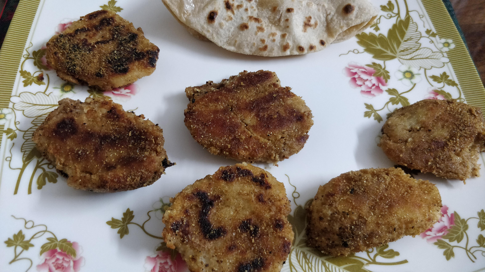

Cooking in a Nutshell
About
This website is dedicated to my mother (Aneesha) who makes our family's meals everyday and making these delicious meals, she sometimes forgets the recipes. I am making this website to keep a track of her recipes, and to share her secret recipes
with the world. This is a present to her for being the world's best mother and to work so hard during the lockdown to take care of her family. I am making this website to thank her.
Recipes By The Magical Morsels
I Thank You, Mom! ‚ù§üòä
Some Indian Specialties
Fried Colocasia
Baked Potato

cakes

My Review
A delicious cake with a tempting brown color. This cake has the flavor of coffee but is definitely a cake. It's so good that it just ends in just 2 days. It can easily become your favorite cake and even your new comfort food. This cake is in my top 3 favorites, resting on the 1 place.

my review
This cake can be made for any occasion. With a restaurant-like flavor, this will be the first cake to pop up in your mind for any occasion. It's very delicius and is my top 3 favorites, resting on the 3 place. This cake can truly make you feel very comfortable once you bite into the soft deliciousness